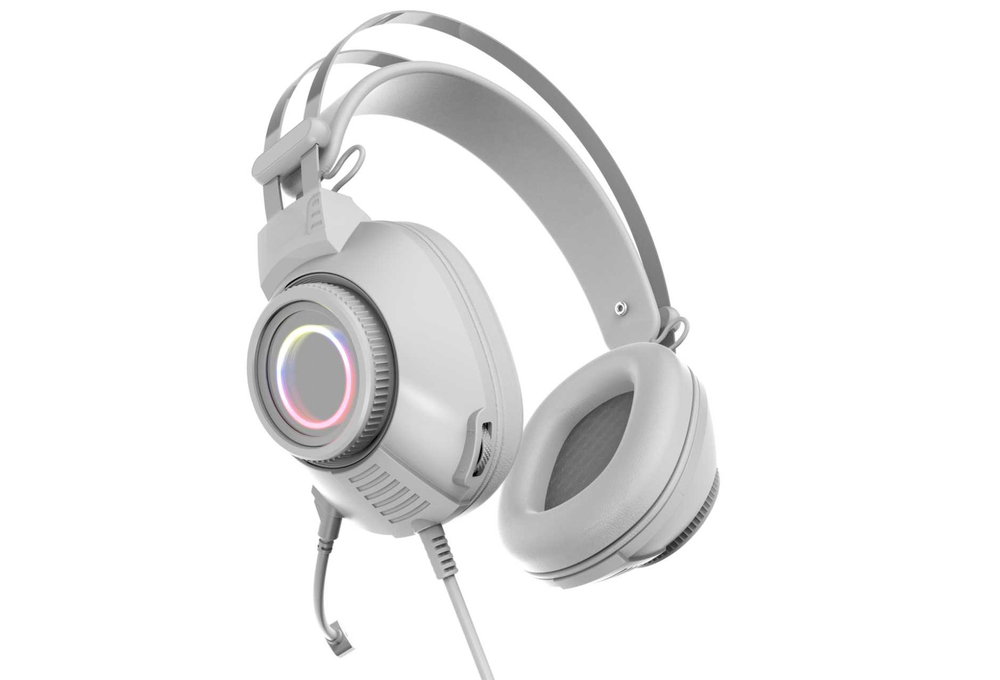
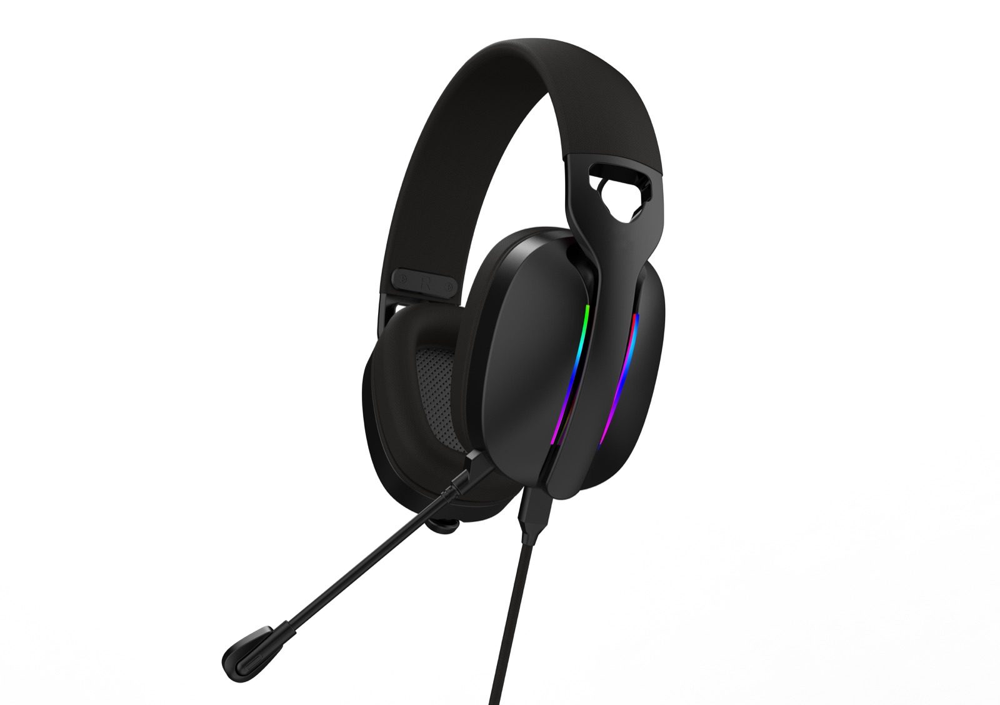

G942 RGB Wired Gaming Headset
The current catalogue lists a 3.5 mm plus USB interface, 20 Hz–20 kHz frequency response and detachable microphone. Confirm the selected version before quotation.

Wired gaming headset manufacturer
Compare TALRIVO wired gaming headset directions using supplied model images, listed interface and microphone details, sample questions, customization steps and RFQ preparation.

Short answer
A useful wired gaming headset RFQ starts with the destination market, sales channel, required interface and quantity range. Buyers can then shortlist RGB models, review samples and discuss branding around the approved version.
Model selection
The notes below come from the current TALRIVO catalogue data and supplied images. Confirm the latest specification, sample and accessory set before quotation.

The current catalogue lists a 3.5 mm plus USB interface, 20 Hz–20 kHz frequency response and detachable microphone. Confirm the selected version before quotation.

The current catalogue lists a 3.5 mm plus USB interface and detachable microphone. Supplied demonstration footage is available for internal product review.
Supplied images show knitted fabric cushions, RGB styling, boom microphone, USB receiver and 3.5 mm cable reference. Confirm the selected connection version before sampling.

Keep G946 as an additional RGB direction; confirm the selected sample, receiver and accessory set before using it in assortment planning.
Buyer decision
Do not assume every 3.5 mm plus USB headset uses the same connection, lighting or control arrangement. Confirm the selected model and sample version.
Procurement path
This sequence helps buyers avoid comparing unmatched configurations or requesting packaging before the base model is clear.
Share the destination country, buyer type and sales channel so the shortlist matches the intended product role.
Explain the intended audio plug, USB lighting or power direction, target device use and any required accessory questions.
Check fit, product finish, controls, microphone, cable, RGB direction and the real connection setup on each sample.
After model selection, send quantity range, logo needs, packaging direction, sample timing and document questions.
Buyer resources
Use the collection page to compare wired RGB, 2.4G wireless and tri-mode headset directions before selecting samples.
Decide whether the range needs wired RGB, 2.4G wireless or a mixed gaming headset assortment.
Prepare repeatable checks for appearance, comfort, controls, microphone, connection and packaging discussion.
Share market, channel, model direction, quantity range, branding needs and sample timing in the first message.
Product FAQ
Wired gaming headsets can support value-focused product ranges, retail bundles and channels that need a clear wired connection and RGB appearance. The exact interface should be confirmed by model.
Yes. Buyers can compare models and samples, then discuss logo, color, packaging, manual language and accessory direction for the selected version.
Confirm the listed audio plug, USB lighting or power direction, cable and control setup, target device use and accessory set for the selected model before quotation.
Include the destination market, sales channel, model interest, required interface, quantity range, sample timing, logo needs, packaging direction and document questions.
Yes. A compact shortlist can be prepared after the buyer shares the target market, channel, product direction and quantity range.
Related pages
Share your destination market, sales channel, required interface, quantity range, sample timing and branding needs. TALRIVO can recommend suitable wired models for review.